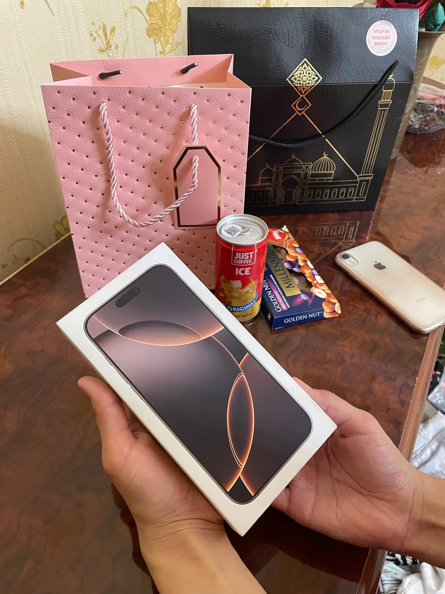
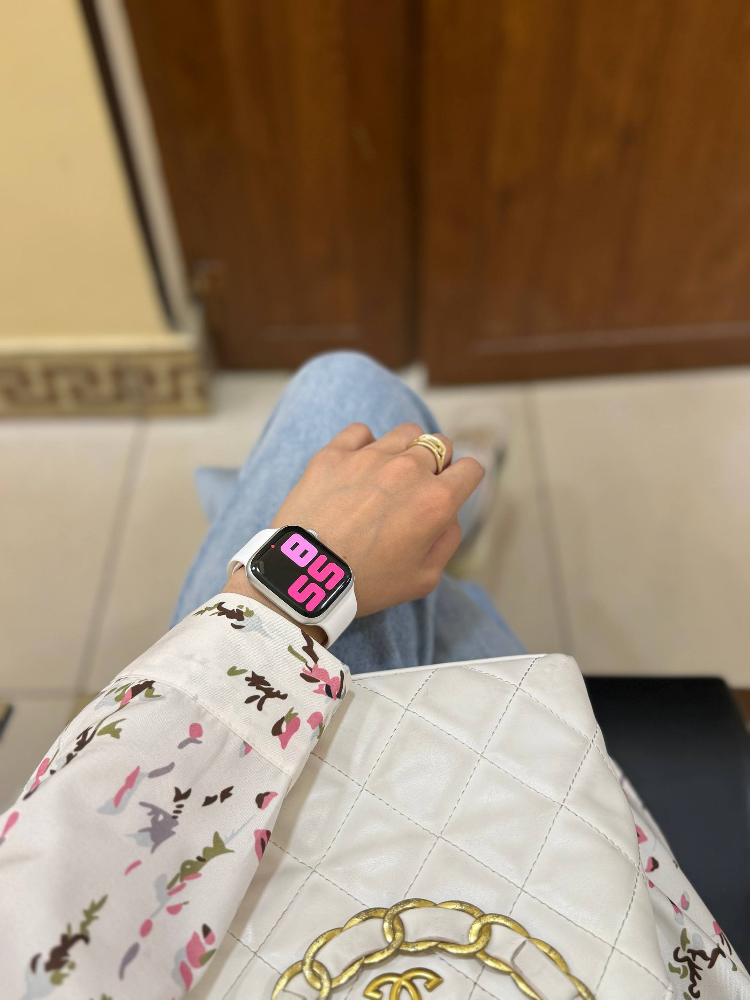
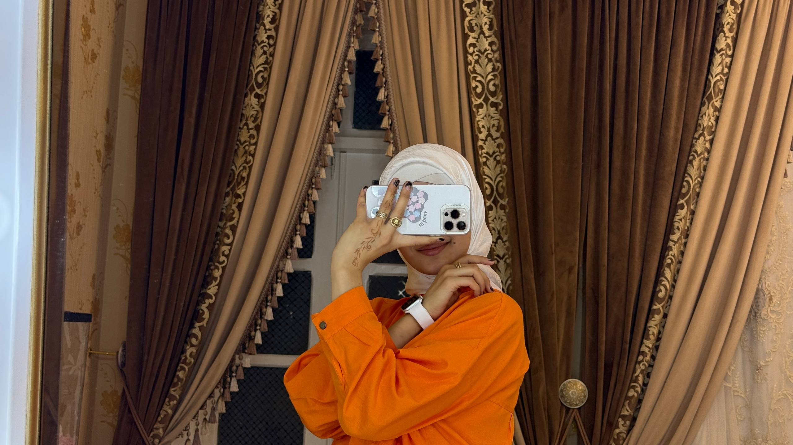
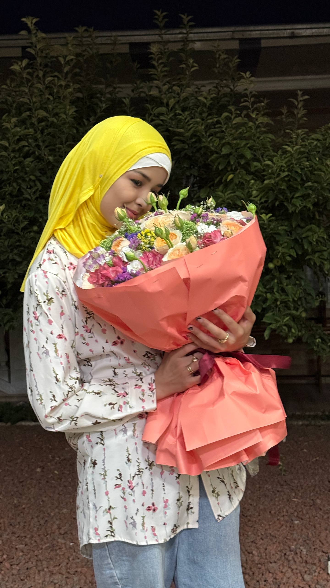
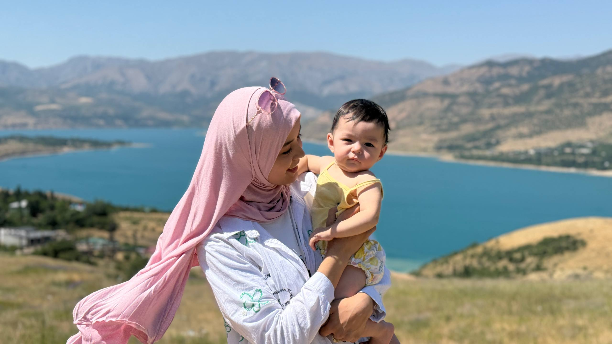
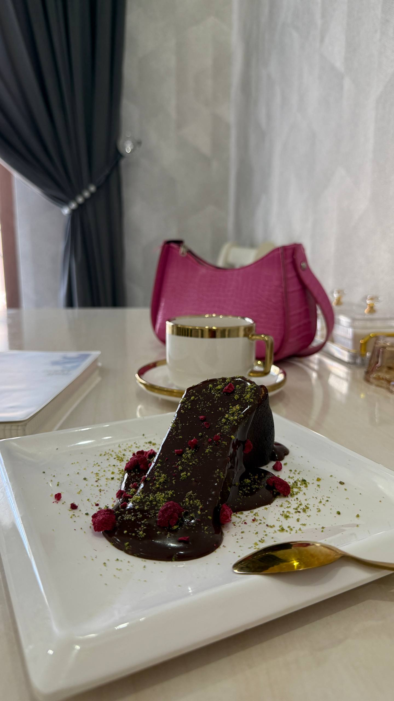
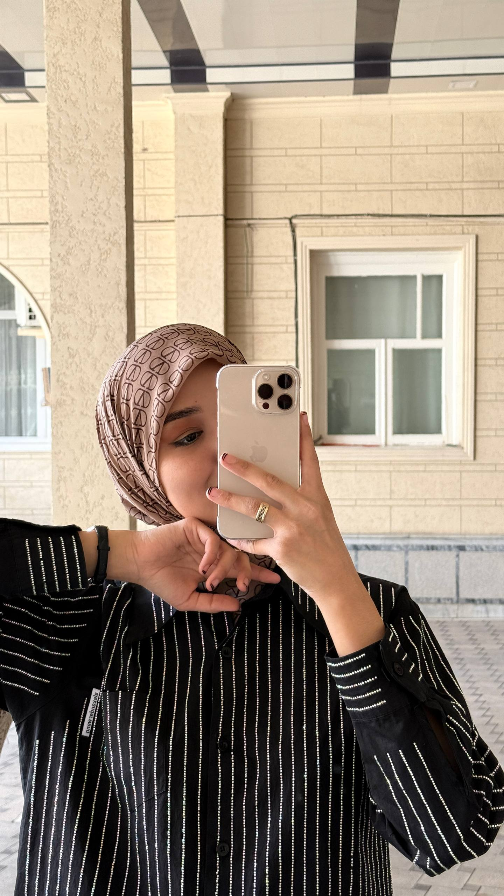
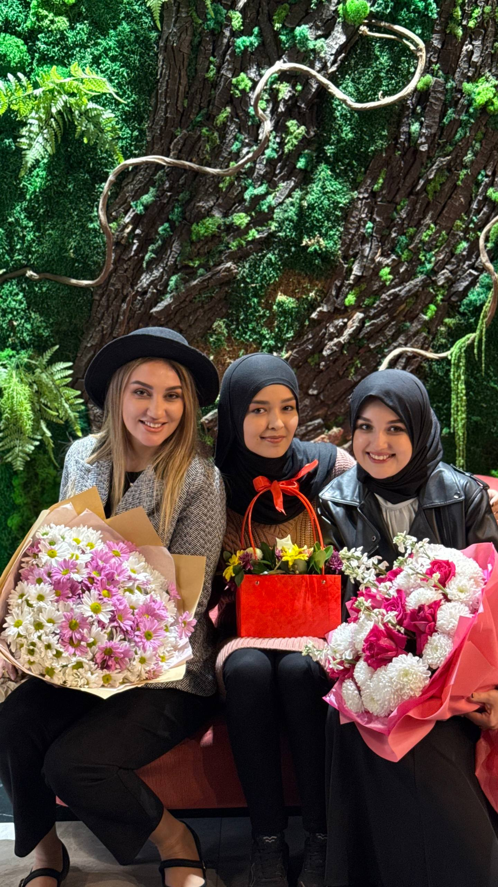
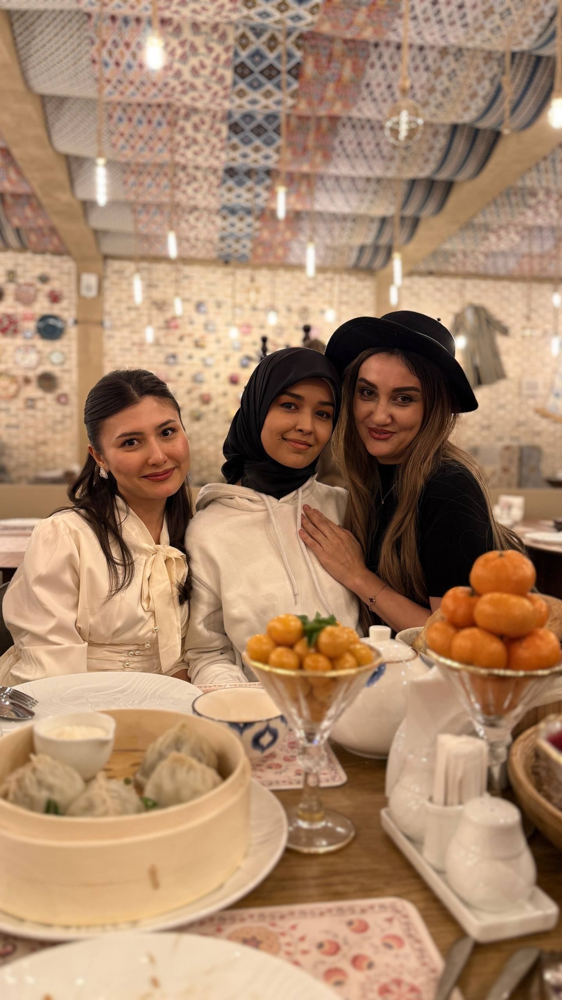
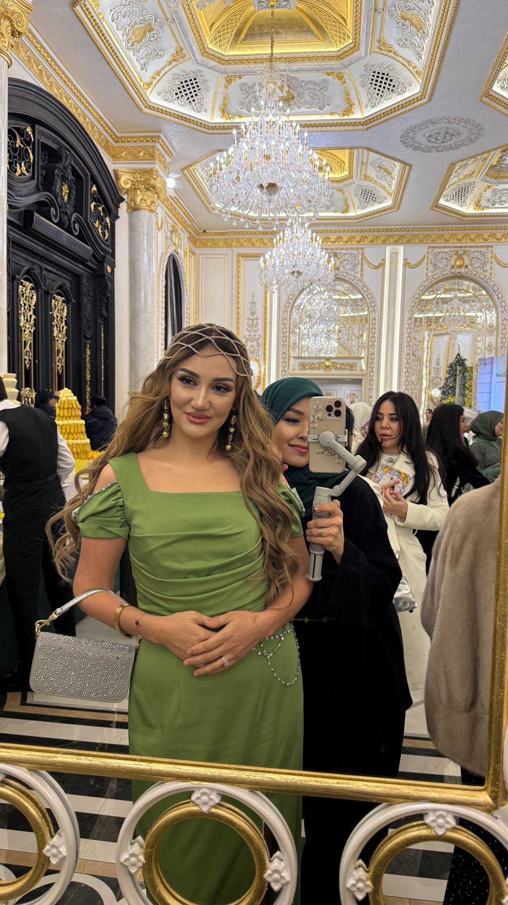

Oddiy ta’rif
Kompozitsiya — kadr ichidagi inson, predmet, fon va bo‘sh joylarning bir-biriga to‘g‘ri joylashuvi.
MOBIPRO
Mobilografiya kursi • 2-dars
2-DARS • MOBILOGRAFIYA
Kadrni professional ko‘rsatish
Yaxshi kamera chiroyli kadrni yaratmaydi. Kadrni ko‘ra bilish yaratadi.
Yaxshi kamera chiroyli kadrni yaratmaydi. Kadrni ko‘ra bilish yaratadi.
Bugun nazariyadan ko‘ra ko‘proq amaliyot qilamiz.

02 • BUGUNGI MAQSAD
BUGUN
Nazariyadan ko‘ra ko‘proq amaliyot qilamiz.
03 • KOMPOZITSIYA
Kompozitsiya — kadr ichidagi inson, predmet, fon va bo‘sh joylarning bir-biriga to‘g‘ri joylashuvi.
Shu 3 savol kadrning sifatini o‘zgartiradi.
04 • SUBJECT
Har bir kadrda tomoshabinning ko‘zi birinchi bo‘lib nimaga tushishini bilishimiz kerak.
Bitta kadrda hamma narsani ko‘rsatishga harakat qilmang.
“Kadrda hamma narsa bo‘lsa, ko‘pincha hech narsa asosiy bo‘lib qolmaydi.”

05 • RULE OF THIRDS
Telefon ekranini 3 × 3 katakka bo‘ling. Asosiy obyektni doimo markazga joylashtirish shart emas.
Uni vertikal yoki gorizontal chiziqlardan biriga yaqin joylashtirish mumkin.
06 • NEGATIVE SPACE

Kadrda obyekt bo‘lmagan joy ham kompozitsiyaning bir qismi.
Masalan, odam chap tomonga qarab turgan bo‘lsa, uning qarash tomonida bo‘sh joy qoldirish mumkin.
Bu kadrga “nafas” beradi.
Bo‘sh joy — bo‘sh kadr degani emas.
07 • HEADROOM & LOOKING ROOM
Bosh ustida qoladigan bo‘sh joy.
Odam qarayotgan tomonda yetarlicha joy.
Har doim obyektning harakat yoki qarash yo‘nalishini hisobga oling.
08 • RAKURS
Bir xil odam.
Bir xil joy.
Bir xil telefon.
Lekin rakurs o‘zgarsa — butunlay boshqa kadr.

09 • 5 TA ASOSIY RAKURS
Ko‘z balandligida.
Pastdan yuqoriga.
Yuqoridan pastga.
Tepadan.
Biroz yon va balandroq/pastroq burchak.
10 • RAKURS TANLASH
Mobilografning vazifasi — shunchaki chiroyli kadr emas, kerakli kadrni topish.
11 • YORUG‘LIK
Yorug‘lik sababli chiroyli ko‘rinadi.
Telefon kamerasi yaxshi yorug‘likda juda katta natija beradi.

12 • LIGHTING
Yorug‘lik obyektning oldidan.
→ Yuz yorqin va toza.
Yorug‘lik yon tomondan.
→ Hajm va soyalar paydo bo‘ladi.
Yorug‘lik obyektning orqasidan.
→ Atmosfera va cinematic effekt.
13 • ENG OSON PRO YORUG‘LIK
Odamni derazaga juda yaqin qo‘ymang.
Yorug‘lik yuzga yumshoq tushadigan nuqtani toping.
Deraza → Odam → Kamera
Keyin odamni biroz burib ko‘ring.
Bir necha santimetr o‘zgarish ham yuzdagi soyani o‘zgartiradi.

14 • HARD VS SOFT
Shuning uchun bulutli kun ham mobilograf uchun yaxshi imkoniyat.
15 • FON

👀 Obyektga qarang. Keyin fonni tekshiring.
Professional mobilograf avval kadrni ko‘radi, keyin REC bosadi.
16 • 5 SONIYALIK QOIDA
Shundan keyin — REC.
17 • AMALIYOT
Oddiy telefon yoki parfumeriya mahsuloti.
Maqsad — bir obyektni turli yo‘llar bilan ko‘rishni o‘rganish.
18 • AMALIY TOPSHIRIQ №1
Qaysi rakurs obyektni yaxshiroq ko‘rsatdi? Nega?
O‘quvchi faqat suratga olmaydi — nima uchun shunday olganini tushuntiradi.
19 • AMALIY TOPSHIRIQ №2

20 • BIR JOY — 5 KADR
Joy va muhitni ko‘rsatadi.
Obyektni muhit bilan birga ko‘rsatadi.
Asosiy obyektga yaqin kadr.
Mayda detalga e’tibor.
Noodatiy va ijodiy rakurs.
Bu mashq kadr ko‘rish qobiliyatini rivojlantiradi.
21 • ENG MUHIM FIKR
Telefon — faqat vosita.
22 • UYGA VAZIFA
Uyda yoki ko‘chada 1 ta obyekt tanlang.
5 ta kadrli mini-video oling.
Eng yaxshi variantlaringizdan 1 ta mini-reels yig‘ing.
Keyingi darsgacha tayyorlagan ishlaringizni guruhga yuborasiz.
23 • KEYINGI DARSDA

BUGUNNI ESLAB QOLING
“REC bosishdan oldin — ko‘r.” 🤎
MOBILOGRAFIYA • PRAKTIKA



